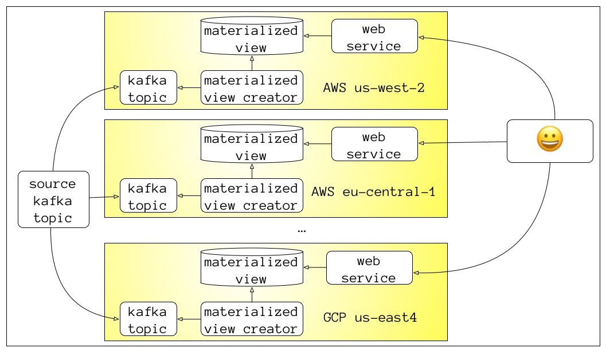
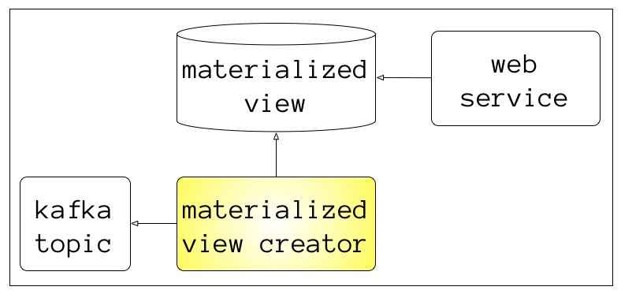
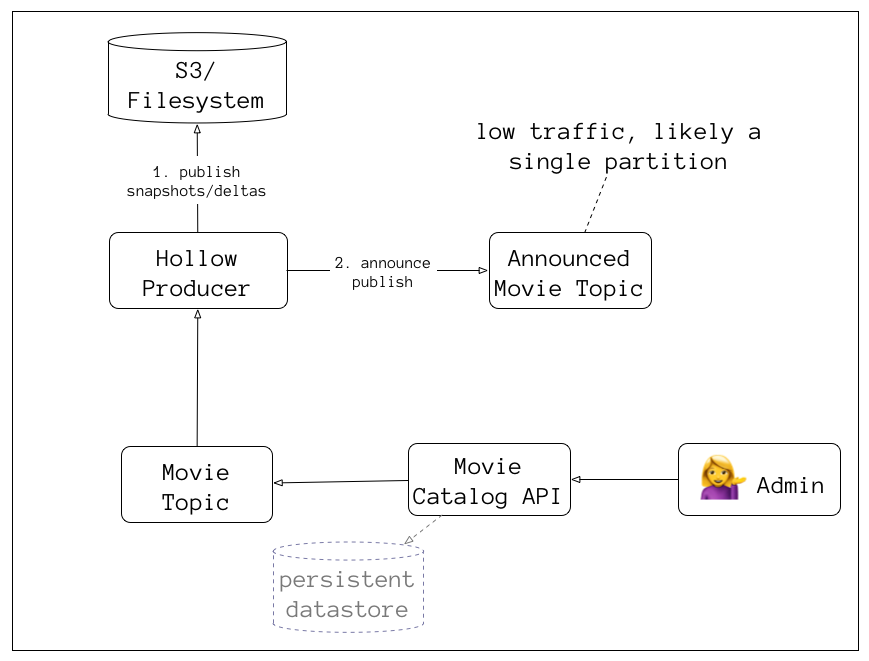
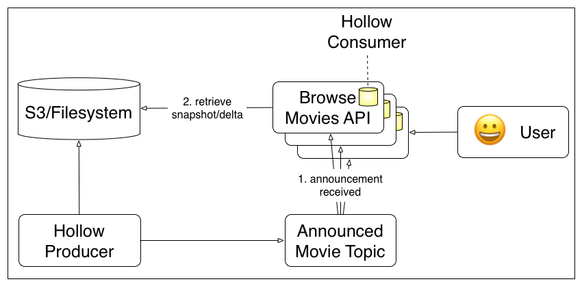

Overview
Tight vs Loose Coupling
What Kafka is/how it helps
What Hollow is/how it helps
Microservices
“loosley coupled Service-Oriented Architecture with bounded contexts”
— Adrian Cockcroft (AWS/Netflix)
Bounded Contexts
from Domain-Driven Design, a conceptual model where
a specific domain model applies
Microservices all share a single domain model?
is there a .jar file with domain classes?
You've built a
“distributed monolith”
Golden Rule of Component Reliability
“any critical component must be 10 times as
reliable as the overall system's target, so that its contribution to system unreliability is noise”
Tight Coupling
Services directly calling services
Looser Coupling
some caching, reverse proxy, grace periods, circuit breakers
issues: cache invalidation rules, cold start/cache flush,
emergency changes, race conditions
Ideal Coupling
totally functional during a partition
only thing more "loose" is no dependency at all
#1 thing you can do for scalability and fault-tolerance?
separate your
reads and writes
don't do this if you don't need scalability & fault-tolerance
read requests are many orders of magnitude
more frequent
with exceptions (logging/metrics) where writes are far more frequent
write requests have consequences
cache-invalidation, notifications, etc
decouple and scale reads with materialized views
also called “derived data”
optimized for the query patterns of each microservice
Separate Reads and Writes

A log-based
(append-only) message broker
combines databases (durable storage) and messaging (queuing and publish/subscribe)
Kafka brokers have few* moving parts
focused on speed, reliability, reasonability
*compared to things like JMS, AMQP, RabbitMQ
Producer (API)
↓
Kafka Broker
↓
Consumer (API)
Kafka cluster is made of many brokers
uses Zookeeper for leader-election and broker metadata
brokers have many named topics
replication across brokers configured per topic
each topic has 1..N partitions

producers push data to a topic's partitions
# send message {"id":"123", value: "foo"} with key "123"
echo '123,{"id":"123", value: "foo"}' |\
kafkacat -P -K ',' -b 127.0.0.1:9092 -t the-topic
message payload is binary data
can be String/JSON/Avro/Protocol Buffers/Whatever
producers can publish lots of data quickly
# send 100,000 messages with key 1 through 100000
# and value {"id": "<#>", value: "bar"}
seq 100000 |\
awk '{printf "%s,{\"id\":\"%s\", value: \"bar\"}\n", $1, $1}' |\
kafkacat -P -b 127.0.0.1:9092 -t the-topic -K ','
consistent hashing
messages with the same key always go to the same partition
consumers are pull-based
they maintain per-partition offsets
by default in a special topic called __consumer_offsets
partitions are balanced across a consumer group
max # of consumers for a topic is the number of partitions
consumption is
not destructive
messages have a retention period (default 24-hours)
message compaction keeps one message per key
compaction keeps the latest value per key

How does Kafka enable decoupling?
if a consumer falls behind, the topic acts as a buffer and doesn't stop producers
multiple specialized consumers can be created
Elasticsearch index for searching
JSON payload in S3 buckets for SPA
logging/metrics driven off Kafka
scale to multiple availability zones, datacenters, or even multiple cloud providers

Kafka “MirrorMaker” can mirror the contents of a topic to other kafka clusters
materialized views can be thrown away and rebuilt
great for blue/green deployments
also for replicating data to lower environments
clear separation between writes and reads
triaging a bug?
if it's in kafka, it's downstream, otherwise upstream
What can create materialized views?

simple Java/Groovy app with Kafka consumer libraries
Akka Kafka
Streams app
or Ratpack/RxJava/Spring Reactor something async
stream processing framework like
Spark, Flink, etc
Apache alone has 10+ of these, but they tend to be heavy
Hollow
Netflix Java API for non-durable in-memory caches
Used in production for over 2 years
“a way to compress your dataset in memory while still providing O(1) access to any portion of it”
- Drew Koszewnik (lead contributor, Netflix)
Kilobytes to Megabytes, often Gigabytes,
but not Terabytes
works hard to minimize heap space and GC impact of updates
not suitable for every kind of data problem
but great for the ones it is a fit for
Single Producer
Many Consumers
Producer requires a Publisher
and an Announcer

Consumer requires an AnnouncementWatcher and a BlobRetriever

read-heavy lookup data where objects change relatively frequently
weekly/daily/hourly, but not every second
Netflix uses it for video metadata
why use this over memcached/redis or a full database?
initial load at startup then resilient to network partitions
fewer running servers/moving pieces
to be available
faster response times,
no network calls,
just memory access
When should you use redis/memcached instead?
data changes
very frequently
data must be consistent across servers
Single Producer
need to think about failover (zookeeper/etcd with leader election, multiple hot producers)